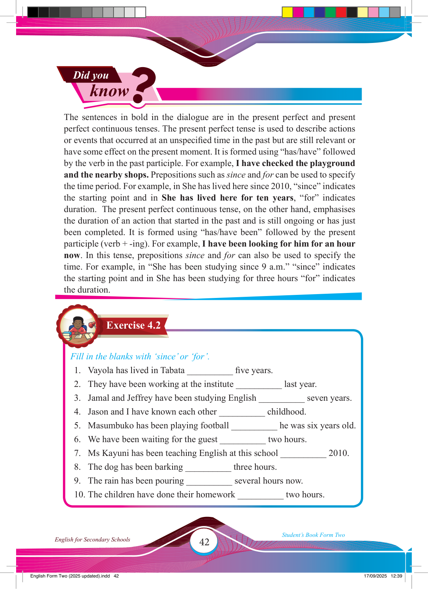

42
Student’s Book Form Two
English for Secondary Schools
Exercise 4.2
Did you
know
?
The sentences in bold in the dialogue are in the present perfect and present perfect continuous tenses. The present perfect tense is used to describe actions or events that occurred at an unspecifi ed time in the past but are still relevant or have some effect on the present moment. It is formed using “has/have” followed by the verb in the past participle. For example, I have checked the playground and the nearby shops. Prepositions such as since and for can be used to specify the time period. For example, in She has lived here since 2010, “since” indicates the starting point and in She has lived here for ten years, “for” indicates duration. The present perfect continuous tense, on the other hand, emphasises the duration of an action that started in the past and is still ongoing or has just been completed. It is formed using “has/have been” followed by the present participle (verb + -ing). For example, I have been looking for him for an hour now. In this tense, prepositions since and for can also be used to specify the time. For example, in “She has been studying since 9 a.m.” “since” indicates the starting point and in She has been studying for three hours “for” indicates the duration.
Fill in the blanks with ‘since’ or ‘for’.
1. Vayola has lived in Tabata __________ fi ve years.
2. They have been working at the institute __________ last year.
3. Jamal and Jeffrey have been studying English __________ seven years.
4. Jason and I have known each other __________ childhood.
5. Masumbuko has been playing football __________ he was six years old.
6. We have been waiting for the guest __________ two hours.
7. Ms Kayuni has been teaching English at this school __________ 2010.
8. The dog has been barking __________ three hours.
9. The rain has been pouring __________ several hours now.
10. The children have done their homework __________ two hours.
17/09/2025 12:39